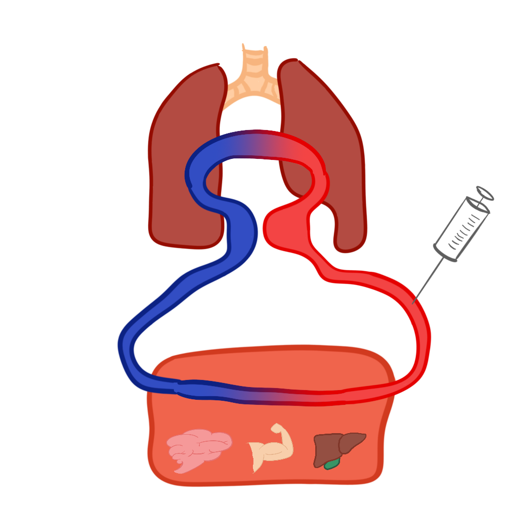
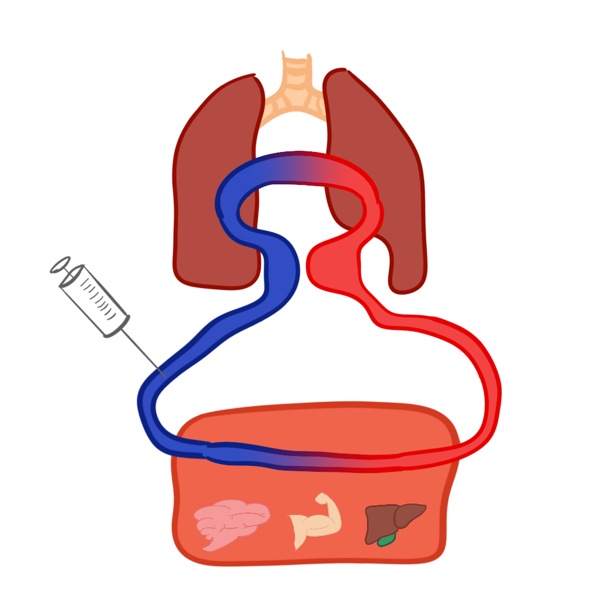
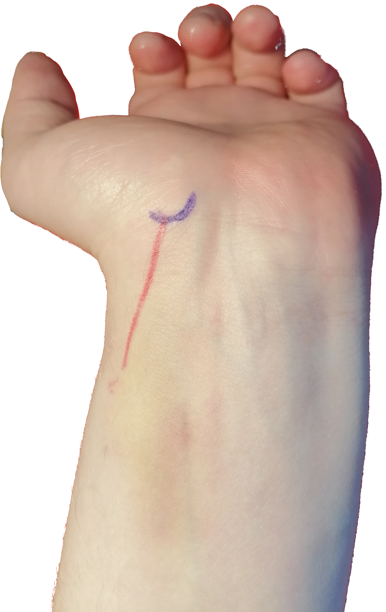

Arteriell blodgass
Bakgrunn
Blodgass gir klinikere muligheten til å vurdere nivået, partialtrykket, av forskjellige gasser i blodet i kilopascal (kPa) og syre-basestatus gjennom pH som er hydrogenioner sin aktivitet målt på en logaritmisk skala. Nivåene reflektere lungenes gassutvikling og kroppens metabolske aktivitet. Det blir også målt andre verdier som er viktige i akutte situasjoner; laktat og glukose. Prøvene for blodgass kan tas både venøst, arterielt og kapillært.
Arteriell blodgass
Dette er gullstandarden for måling av gasstrykk og syre-basestatus. Ettersom det er en enkel prossedyre som ofte analyseres pasientnært, er den er den perfekt for akutt situasjoner hvor det trengs å vurdere alvorlighetsgraden av en tilstand. Klassiske eksempler hvor det alltid skal tas er bevisstløs pasient (ketoacidose, hypoglykemi), obstruktiv lungesykdom (KOLS), mistanke om alvorlige infeksjoner (sepsis) eller iskemi i tarm (illeus). 
Venøs blodgass
En venøs prøve er hentet fra blod i venøs fase. Dette er blod som returnerer tilbake til hjertet etter å ha vært gjennom kroppens. Etter det har levert fra seg oksigen og næring, samt tatt i mot avfallsstoffer som karbondioksid Gjennomsnittlig er pH 0,03 enheter lavere i venøst enn i arterielt blod, mens pCO2 er 0,6 kPa høyere og pO2 er 4,9 kPa lavere. 
Prøvetaking
Utstyr
- Pasientens ID
- Blodgassprøyte
- Desinfeksjon
- Tupfer
Forberedelse
- Bekreft pasientens ID
- Fortell pasienten hensikt med prøven og hva som skal skje
- Sprit eller vask fingrene
- Kjenn etter pulsen med flere fingre
- Sprit området
- Sprit non-dominant fingertupp
Teknikk
Alle har hver sin teknikk, men teknikken jeg presenterer her legger vekt på å minimalisere pasientens ubehag. Dette ved å gjøre to forsøk på vinkelrett stikk. Dette stikket penetrerer minst vev og gjør derfor minst vondt. Det er derimot ikke lurt å gjøre et nytt tredje stikk ettersom nålen begynner å bli sløv.
- Bruk den spritede fingertuppen til å kartlegge 2-3 cm av årens forløp. Enklest er dette om fingeren er parallell til arterien.
- Når arterien er lokalisert under sentrum av fingernegl, flyttes fingertuppen tilsvarende distalt for å klargjøre til stikk.
- Fortell pasienten at det kommer et stikk.
- Stikk nålen vinkelrett inn i arterien ca 10 mm.
- Om du bommer tar du ut nålen, kjenner kjapt på nytt og stikker lodrett en gang til.
- Ved fortsatt bom kan du nå begynne å lete. Da bruker du den spritede fingeren til å finne pulsen, og vinkler nålen 30-60 grader i forhold til huden og stikker mot blodåren.
- Press en tupfer hardt over inntikkssted i 2 minutter. Som regel trengs ikke tape eller plaster.
Tips og triks
- Legg dynen under pasientens håndledd for å få strekk på arterien. Dette hindrer den i å rulle.
- Bruk god tid på å finne pulsen. Let gjerne på begge armene. Som regel kan det teknisk sett være lettest å stikke på venstre hånd, ettersom du da enkelt kan sitte forran pasienten og kjenne med venstrehånden og bruke høyre hånd til å stikke.
-  Arterien ligger mest perifert helt distalt mot håndleddet. Som regel stikker jeg 1-2 cm proksimalt for tuberkelen på skafoidbenet.
- Om det kommer blodsvar når du stikker, men sprøyten ikke automatisk fylles har du gått gjennom blodåren. Da behøver du bare trekke nålen lett tilbake for å komme inn i blodåren igjen.
Analyse
Siden blodgass ofte analyseres i stressende situasjoner er det viktig å holde hodet kaldt og ha en systematisk fremgangsmåte.
Start med å se på pH. Dette gir et raskt verblikk over syre-basestatus i blodet:
- Normalt nivå av syre i blodet
- Høyt nivå av syre, lav pH, acidose
- Lavt nivå syre i blodet, høy pH, alkalose
En kan så vurdere nivået av bikarbonat (HCO3) og pCO2 for å si noe om bakgrunnen for forstyrrelsen. Ved unormal pH i en akutt fase er det fire forskjellige hoved scenarier.
| pCO2 | HCO3 | |
|---|---|---|
| Respiratorisk acidose | høy | normal |
| Metabolsk acidose | normal | lav |
| Respiratorisk alkalose | lav | normal |
| Metabolsk alkalose | normal | høy |